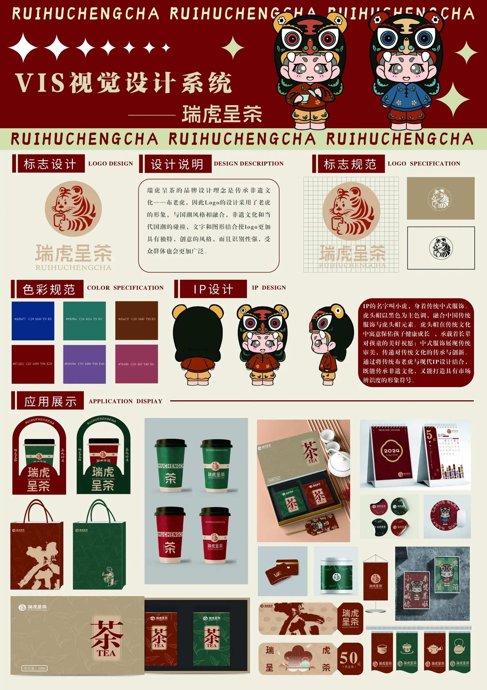

PORTFOLIO · 2023—2026
VisualStoryteller.
用清晰的视觉秩序，讲述品牌、文化与日常。

谭鑫
视觉传达设计师
向下浏览
NANJING · CHINA
01 / ABOUT
你好，
我是谭鑫。
南京审计大学金审学院视觉传达设计专业学生，关注品牌识别、包装设计、编辑版式与影像表达。
我习惯从信息层级和使用场景出发，让概念在视觉上清楚、在实际载体中成立。学习之外，我也持续参与新媒体宣传与美术教学实践。
- 教育
- 视觉传达设计 · 2027届
- 成绩
- 绩点 3.7 / 4.0 · 前10%
- 工具
- Illustrator / Photoshop / Lightroom / Premiere / InDesign
- 方向
- 品牌视觉 / 包装 / 版式 / 影像
02 / SELECTED WORK
精选作品
将视觉概念落在可阅读、可触摸、可传播的真实载体中。
03 / VIDEO SHOWCASE
视频作品
四张画面均为视频截图，点击卡片或链接可前往观看完整视频。
04 / MOTION & PRACTICE
让画面
开始流动
从现场观察到后期节奏，把真实课堂与品牌氛围转化成可感知的影像。
05 / CONTACT